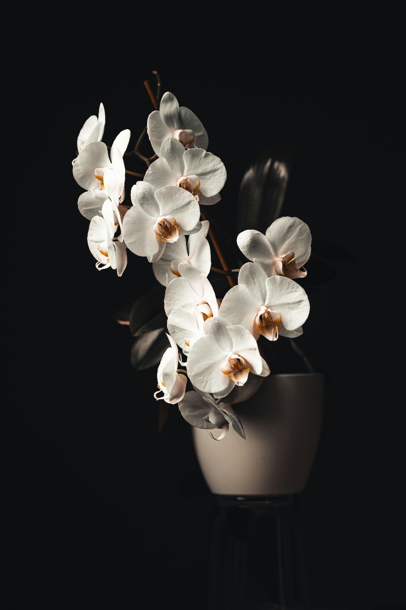

Choosing the right floral arrangements can make or break the aesthetic of an event. As an event planner, florist, or decorator, your primary goal is to curate atmospheres that leave a lasting impression while effectively managing your procurement strategy. Whether you're planning a lavish destination wedding or an executive corporate gala, selecting the right botanicals is essential.
Today, we will dive into a detailed comparison of three event favorites: Roses, Gerberas, and Orchids. By understanding their unique aesthetics, vaselife, and ideal settings, you can effortlessly decide between roses vs gerbera event decor and determine the best flowers for corporate events.
1. Roses: The Timeless Classic

Vibe: Romantic, Traditional, Opulent
Ideal For: Weddings, Anniversary Galas, High-end Receptions
When it comes to grand floral gestures, roses remain undefeated. Specifically in the luxury wedding space, the visual weight and structured petal formation of roses (particularly varieties like Avalanche or Ecuadorian roses) offer unmatched elegance. They fill out mandaps, arches, and centerpieces with robust volume.
If you're weighing roses vs gerbera event decor for an evening reception, roses offer the formal elegance and classic structural stability needed for low-light ambiance. While they can be slightly heavier on the budget compared to gerberas, the dramatic payoff and enduring symbolism make them the ultimate bridal staple.
"Roses are the heavy lifters of structural floristry. They provide the dense color blocking required for immersive floral installations."
2. Gerberas: The Playful Pop of Color
Vibe: Cheerful, Modern, Vibrant
Ideal For: Daytime Events, Haldi/Mehndi Ceremonies, Casual Corporate Retreats
Gerberas offer an expansive palette of cheerful, bright tones that immediately brighten a room. Their flat, architectural faces make them phenomenal for geometric arrangements or massive, sweeping color gradients.
For daytime events or culturally vibrant ceremonies like Indian Haldis and Mehndis, gerberas easily rival traditional marigolds. They are incredibly cost-effective for large-scale coverage. Their sturdy stems make them resilient in outdoor, sunny environments compared to more delicate blooms.
3. Orchids: The Exotic Executive Choice

Vibe: Sophisticated, Tropical, Architectural
Ideal For: Corporate Galas, Luxury Brand Launches, Modern Receptions
If you're searching for the best flowers for corporate events, orchids (such as Dendrobium, Cymbidium, or Phalaenopsis) are an impeccable choice. Their tall, structural stems and unique silhouettes communicate wealth, refinement, and exotic luxury without overwhelming a minimalist space.
Orchids work magically in sleek, modern centerpieces where less is more. For large-scale decorators, sourcing orchid wholesale flowers provides a significant advantage: their longevity. Orchids can easily outlast an entire multi-day corporate seminar or luxury retreat, making them a brilliant long-term investment for consecutive event days.
The Final Verdict
Ultimately, choosing the right flower depends entirely on the atmosphere you are curating:
- For undeniable romance and density: Choose Roses.
- For high-energy, vibrant daytime coverage: Choose Gerberas.
- For architectural sophistication and corporate grace: Choose Orchids.
At Fleur Vine, we empower event specialists with farm-fresh supply. Whether you need bulk gerberas for a vibrant festival or delicate orchids for an exclusive gala, we provide export-grade botanicals directly to your venue.
← Back to all articles